Utterance-Aligned Clips
Whisper timestamps define semantically coherent clip boundaries and preserve temporally localized hateful cues.
Clip-Level Multimodal Alignment with VLM-Derived Rationales for Hateful Video Detection
University of Essex · University of Exeter · Queen Mary University of London
Paper accepted at ACM Multimedia 2026
Content note: this project studies hateful video detection and may discuss sensitive material. Please follow the original dataset licenses, platform terms, and ethical review constraints.
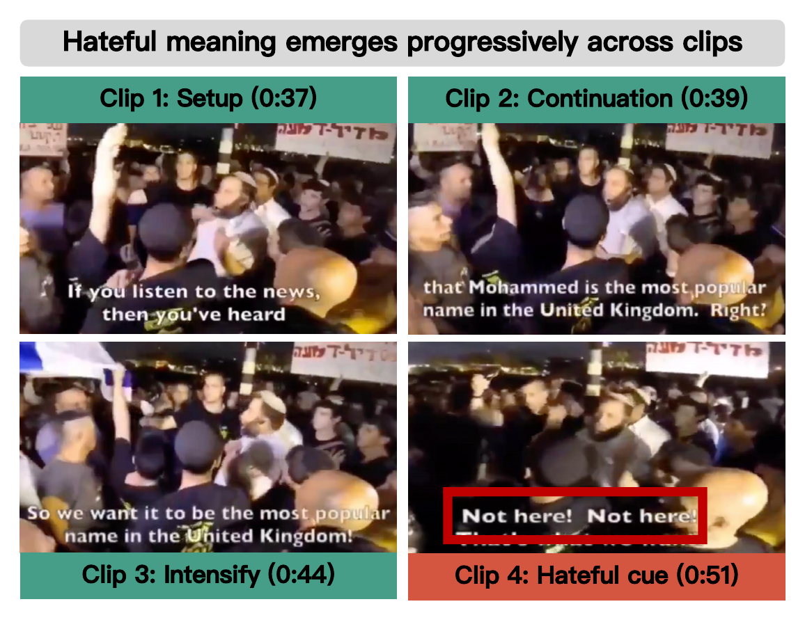
Hateful video detection is challenging because hateful meaning often emerges from brief, implicit, and temporally dependent interactions among speech, audio, text, and visual content. A single frame or a single utterance can look neutral in isolation, while the hateful meaning becomes clear only after contextual buildup across multiple clips.
CLARA first segments videos into utterance-aligned clips, extracts multimodal features, fuses them with a Mixture-of-Experts clip encoder, learns local-global temporal consistency, and integrates VLM-derived rationales through a rationale-gated Transformer.

Whisper timestamps define semantically coherent clip boundaries and preserve temporally localized hateful cues.
Audio, visual, transcript, and OCR representations are routed through a sparse expert encoder.
Short local segments are aligned with longer global segments from the same video and separated from other videos.
A VLM generates structured video-level rationales from sampled frames, title, and transcription.
Clip and rationale representations are gated and aggregated into the final video representation.
For each video, CLARA generates a structured rationale from uniformly sampled frames, the video title, and the full transcription when available.
# Role
You are a professional video content verifier. Your task is to accurately summarize what the video shows and what the accompanying text conveys in an objective and neutral way.
# Instructions
You may use:
(1) 20 frames sampled uniformly in temporal order.
(2) Video title (if available) and full transcription.
You need to:
(1) Describe what is visible in the frames.
(2) Summarize the key messages conveyed by the text.
(3) Provide an overall objective summary combining visual and textual evidence.
(4) Describe how the visuals and the text relate.
Return ONLY the following tagged format (no extra text before or after). Use the tag names exactly:
# Output Format
VISUAL_DESCRIPTION: Neutral description of visible scenes, objects, actions, and symbols. Avoid guessing details that are not supported by the frames.
TEXTUAL_DESCRIPTION: Neutral summary of the title and transcription. Avoid guessing details that are not supported by the text.
CONTENT_SUMMARY: Overall summary combining visual and textual evidence.
CROSS_MODAL_RELATION: One label from {aligned, complementary, conflicting, unclear}.
CROSS_MODAL_EXPLANATION: Briefly explain why that label fits, focusing on whether the visuals support, add context to, contradict, or do not clarify the text evidence.
CONTEXT_ELEMENTS: List of key contextual elements that help interpret the content.
# Textual Input
VIDEO_TITLE: {video_title}
TRANSCRIPTION: {transcription}# Role
You are a professional content verifier conducting hateful content analysis. Your task is to make a careful, evidence-based judgment using the information provided.
# Instructions
You may use:
(1) 20 frames sampled uniformly in temporal order.
(2) video title and full transcription.
(3) The objective analysis of the video provided below.
You need to:
(1) Decide whether the video content is hateful or non-hateful.
(2) If hateful, indicate whether it is explicit or implicit.
(3) List the main reasons that support your decision, focusing on observable or stated evidence rather than speculation.
Return ONLY the following tagged format (no extra text before or after). Use the tag names exactly:
# Output Format
LABEL: <hate | non-hate>
EXPLICITNESS: <explicit | implicit | na>
CONFIDENCE: <high|medium|low>
REASONS: <reason 1>, <reason 2>, ...
NOTES: <any brief clarifications or assumptions, if needed.>
# Textual Information
VIDEO_TITLE: {video_title}
TRANSCRIPTION: {transcription}
OBJECTIVE ANALYSIS: {objective_analysis}The two prompt outputs are normalized into eight textual fields before rationale-guided video aggregation.
CLARA achieves the strongest performance across HateMM, MHC_CN, MHC_EN, and DeHate under 5-fold cross-validation. Compared with the second-best method, CLARA improves by 2.4 to 5.3 percentage points (pp) in Acc, 2.7 to 7.4 pp in M-F1, 0.3 to 3.9 pp in M-Pre, and 2.2 to 9.7 pp in M-Rec across datasets.
Mean and standard deviation are reported over 5 folds. Bold indicates the best result and underlined values indicate the second-best result. † denotes paired t-test significance at p < 0.05 against MoRE, HVGuard, and MM-HSD.
| Method | HateMM | MHC_CN | MHC_EN | DeHate | ||||
|---|---|---|---|---|---|---|---|---|
| Acc | M-F1 | Acc | M-F1 | Acc | M-F1 | Acc | M-F1 | |
| BERT | 0.724 ± 0.028 | 0.709 ± 0.032 | 0.696 ± 0.006 | 0.635 ± 0.019 | 0.674 ± 0.010 | 0.417 ± 0.020 | 0.651 ± 0.006 | 0.522 ± 0.030 |
| Roberta | 0.729 ± 0.014 | 0.718 ± 0.025 | 0.671 ± 0.003 | 0.402 ± 0.001 | 0.672 ± 0.002 | 0.402 ± 0.001 | 0.683 ± 0.000 | 0.406 ± 0.000 |
| MFCC | 0.653 ± 0.048 | 0.598 ± 0.066 | 0.646 ± 0.014 | 0.511 ± 0.020 | 0.656 ± 0.018 | 0.463 ± 0.031 | 0.677 ± 0.003 | 0.441 ± 0.030 |
| Wav2vec | 0.696 ± 0.013 | 0.678 ± 0.016 | 0.675 ± 0.003 | 0.403 ± 0.001 | 0.674 ± 0.008 | 0.403 ± 0.003 | 0.683 ± 0.001 | 0.407 ± 0.001 |
| ViT | 0.700 ± 0.031 | 0.699 ± 0.031 | 0.701 ± 0.007 | 0.553 ± 0.024 | 0.678 ± 0.014 | 0.438 ± 0.026 | 0.685 ± 0.010 | 0.542 ± 0.018 |
| ViViT | 0.718 ± 0.012 | 0.702 ± 0.020 | 0.673 ± 0.032 | 0.558 ± 0.030 | 0.688 ± 0.019 | 0.546 ± 0.037 | 0.687 ± 0.004 | 0.542 ± 0.022 |
| LLaVA | 0.688 ± 0.013 | 0.439 ± 0.015 | 0.669 ± 0.003 | 0.401 ± 0.001 | 0.673 ± 0.003 | 0.402 ± 0.001 | 0.687 ± 0.002 | 0.415 ± 0.007 |
| Qwen3VL | 0.738 ± 0.035 | 0.727 ± 0.035 | 0.709 ± 0.041 | 0.597 ± 0.074 | 0.708 ± 0.014 | 0.588 ± 0.027 | 0.657 ± 0.013 | 0.595 ± 0.012 |
| HateMM* | 0.771 ± 0.033 | 0.770 ± 0.033 | 0.739 ± 0.035 | 0.668 ± 0.046 | 0.678 ± 0.022 | 0.542 ± 0.030 | 0.695 ± 0.021 | 0.613 ± 0.016 |
| MHC* | 0.793 ± 0.023 | 0.782 ± 0.023 | 0.738 ± 0.020 | 0.669 ± 0.030 | 0.688 ± 0.031 | 0.600 ± 0.047 | 0.688 ± 0.017 | 0.622 ± 0.016 |
| DeHate* | 0.754 ± 0.037 | 0.736 ± 0.044 | 0.688 ± 0.009 | 0.595 ± 0.022 | 0.675 ± 0.034 | 0.554 ± 0.053 | 0.679 ± 0.015 | 0.590 ± 0.006 |
| MoRE | 0.813 ± 0.030 | 0.803 ± 0.032 | 0.691 ± 0.018 | 0.539 ± 0.108 | 0.697 ± 0.017 | 0.584 ± 0.070 | 0.711 ± 0.011 | 0.616 ± 0.027 |
| HVGuard | 0.815 ± 0.026 | 0.813 ± 0.027 | 0.754 ± 0.024 | 0.707 ± 0.046 | 0.710 ± 0.030 | 0.632 ± 0.034 | 0.707 ± 0.003 | 0.586 ± 0.034 |
| MM-HSD | 0.839 ± 0.028 | 0.833 ± 0.029 | 0.683 ± 0.016 | 0.654 ± 0.019 | 0.688 ± 0.017 | 0.653 ± 0.017 | 0.689 ± 0.018 | 0.626 ± 0.015 |
| CLARA | 0.879† ± 0.022 | 0.872† ± 0.024 | 0.779† ± 0.016 | 0.734† ± 0.026 | 0.763† ± 0.035 | 0.727† ± 0.042 | 0.735† ± 0.009 | 0.659† ± 0.012 |
| Method | HateMM | MHC_CN | MHC_EN | DeHate | ||||
|---|---|---|---|---|---|---|---|---|
| M-Pre | M-Rec | M-Pre | M-Rec | M-Pre | M-Rec | M-Pre | M-Rec | |
| BERT | 0.719 ± 0.030 | 0.705 ± 0.033 | 0.697 ± 0.014 | 0.629 ± 0.016 | 0.475 ± 0.196 | 0.503 ± 0.004 | 0.617 ± 0.012 | 0.543 ± 0.019 |
| Roberta | 0.722 ± 0.024 | 0.703 ± 0.027 | 0.336 ± 0.001 | 0.500 ± 0.000 | 0.336 ± 0.001 | 0.500 ± 0.000 | 0.342 ± 0.000 | 0.500 ± 0.000 |
| MFCC | 0.653 ± 0.085 | 0.608 ± 0.052 | 0.550 ± 0.027 | 0.528 ± 0.015 | 0.536 ± 0.046 | 0.512 ± 0.012 | 0.527 ± 0.036 | 0.508 ± 0.010 |
| Wav2vec | 0.688 ± 0.016 | 0.676 ± 0.017 | 0.337 ± 0.002 | 0.500 ± 0.000 | 0.338 ± 0.003 | 0.498 ± 0.003 | 0.542 ± 0.245 | 0.500 ± 0.001 |
| ViT | 0.701 ± 0.033 | 0.699 ± 0.031 | 0.669 ± 0.011 | 0.570 ± 0.014 | 0.644 ± 0.195 | 0.512 ± 0.010 | 0.610 ± 0.023 | 0.555 ± 0.012 |
| ViViT | 0.711 ± 0.011 | 0.703 ± 0.022 | 0.619 ± 0.054 | 0.566 ± 0.024 | 0.634 ± 0.044 | 0.563 ± 0.026 | 0.615 ± 0.009 | 0.556 ± 0.013 |
| LLaVA | 0.678 ± 0.120 | 0.513 ± 0.009 | 0.335 ± 0.001 | 0.498 ± 0.002 | 0.337 ± 0.001 | 0.500 ± 0.000 | 0.527 ± 0.091 | 0.501 ± 0.003 |
| Qwen3VL | 0.726 ± 0.035 | 0.736 ± 0.036 | 0.705 ± 0.088 | 0.605 ± 0.057 | 0.729 ± 0.029 | 0.589 ± 0.020 | 0.598 ± 0.013 | 0.593 ± 0.011 |
| HateMM* | 0.772 ± 0.035 | 0.771 ± 0.033 | 0.706 ± 0.051 | 0.659 ± 0.042 | 0.624 ± 0.053 | 0.557 ± 0.016 | 0.639 ± 0.029 | 0.608 ± 0.015 |
| MHC* | 0.788 ± 0.025 | 0.779 ± 0.021 | 0.704 ± 0.026 | 0.660 ± 0.027 | 0.630 ± 0.043 | 0.600 ± 0.038 | 0.631 ± 0.020 | 0.618 ± 0.015 |
| DeHate* | 0.748 ± 0.039 | 0.733 ± 0.045 | 0.635 ± 0.013 | 0.595 ± 0.017 | 0.605 ± 0.069 | 0.563 ± 0.043 | 0.614 ± 0.014 | 0.588 ± 0.006 |
| MoRE | 0.806 ± 0.032 | 0.801 ± 0.034 | 0.588 ± 0.146 | 0.572 ± 0.065 | 0.653 ± 0.027 | 0.595 ± 0.052 | 0.668 ± 0.027 | 0.614 ± 0.023 |
| HVGuard | 0.811 ± 0.026 | 0.814 ± 0.028 | 0.725 ± 0.031 | 0.707 ± 0.056 | 0.672 ± 0.062 | 0.628 ± 0.032 | 0.657 ± 0.006 | 0.590 ± 0.026 |
| MM-HSD | 0.835 ± 0.030 | 0.833 ± 0.029 | 0.652 ± 0.019 | 0.662 ± 0.023 | 0.652 ± 0.017 | 0.658 ± 0.019 | 0.654 ± 0.013 | 0.626 ± 0.016 |
| CLARA | 0.874† ± 0.022 | 0.872† ± 0.028 | 0.760† ± 0.030 | 0.726† ± 0.032 | 0.732† ± 0.041 | 0.725† ± 0.043 | 0.697† ± 0.016 | 0.650† ± 0.011 |
Each dataset is analyzed with the same four views: (a) MoE configuration, including the number of experts and top-k routing. (b) local and global temporal ratios used in contrastive learning. (c) contrastive loss weight. (d) total frame budget.
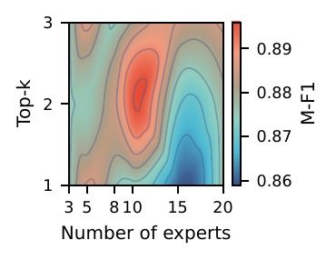
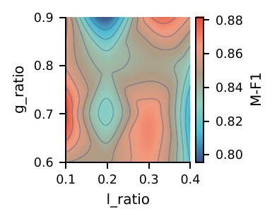
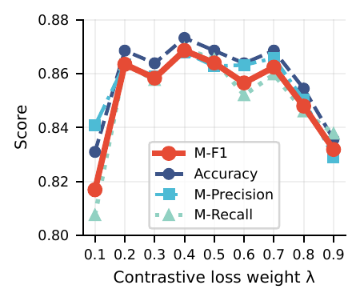
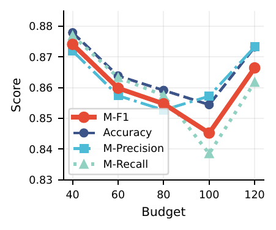
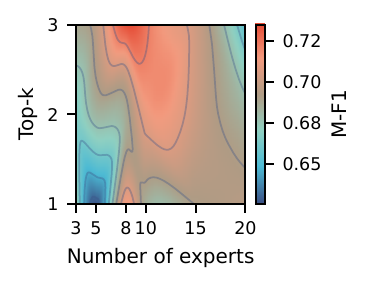
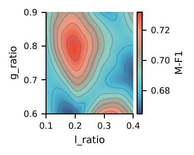
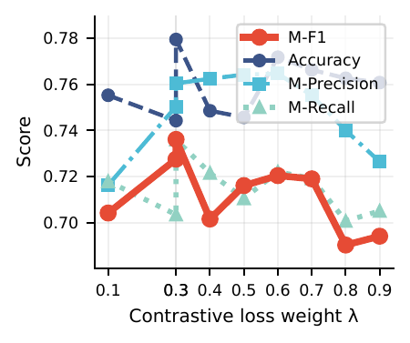
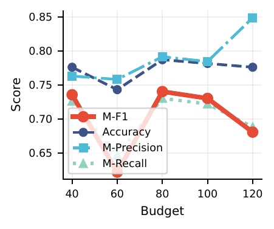
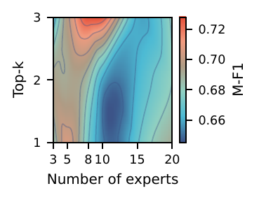
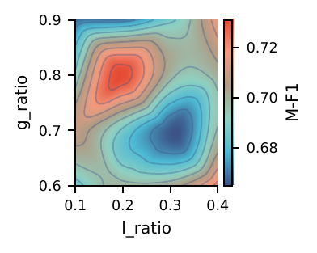
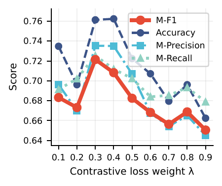
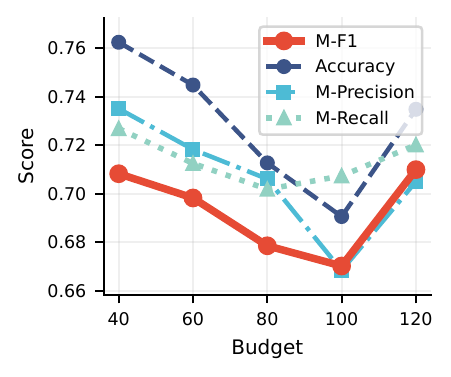
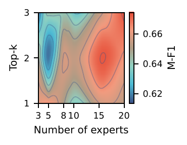
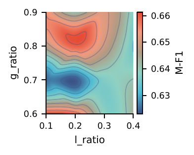
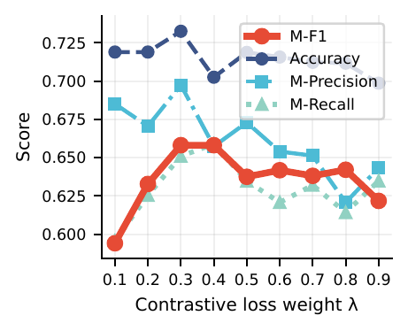
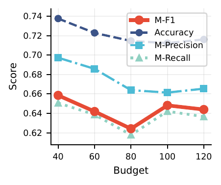
Across datasets, CLARA shows a consistent pattern: moderate MoE capacity is more effective than very small or overly large expert pools. Local cues work best when paired with broader global context. Contrastive learning helps most at a balanced weight around 0.3-0.4. Increasing the frame budget does not monotonically improve performance once the key multimodal evidence has been captured.
We compare two routing statistics to understand how the MoE module allocates computation across experts. Gate denotes the raw routing probability before sparsification, reflecting the router's initial preference over all experts. Top-k denotes the effective routing probability after retaining and renormalizing only the selected experts, representing actual expert usage during inference.
Across datasets, gate probabilities remain relatively balanced, while top-k distributions become much more uneven. This suggests that CLARA keeps multiple experts active as candidates, then uses sparse routing to form dataset-specific expert specialization patterns. MHC_CN shows the strongest concentration, MHC_EN is more distributed, and DeHate lies between these two cases.
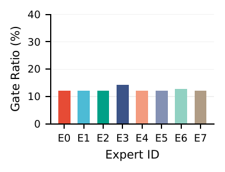
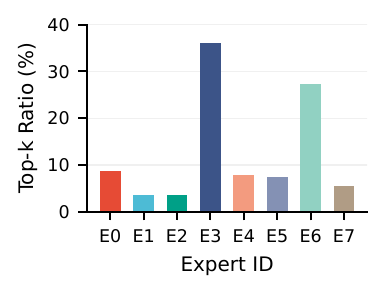
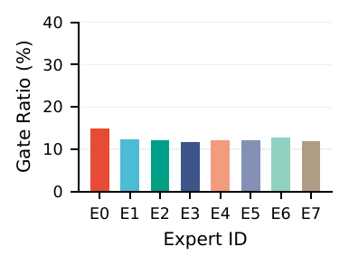
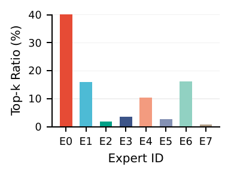
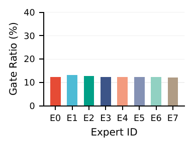
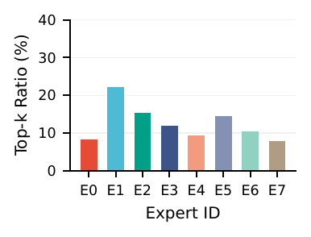
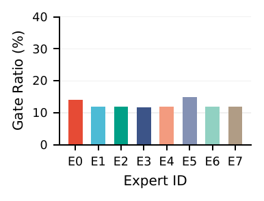
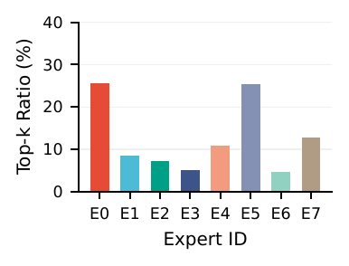
The repository contains the full CLARA preprocessing, feature extraction, rationale generation, training, and evaluation pipeline. The workflow follows the same order as the README.
Raw video
-> audio extraction and Whisper transcription
-> utterance-aligned clip metadata
-> clip-level frames and OCR text
-> VLM-derived rationales
-> clip-level multimodal embeddings
-> CLARA training and evaluationExtract audio and obtain timestamped Whisper transcriptions for clip-level segmentation.
python data_preprocess/get_raw_features/get_audio.py
python data_preprocess/get_raw_features/get_transcription.py{video_id}.wav
{video_id}.json # segment id, start, end, textGenerate clip metadata, extract clip frames, and obtain OCR text for each clip.
python data_preprocess/get_raw_features/get_video_clip.py
python data_preprocess/get_raw_features/get_frame.py
python data_preprocess/get_raw_features/get_ocr.py{video_id}/
clipinfo.json
clip_000/
frames/frame_40/
frames/frame_60/
frames/frame_80/
frames/frame_100/
frames/frame_120/
ocr_text/ocr_clip.jsonSample frames for VLM reasoning and generate video-level rationales.
python data_preprocess/get_raw_features/get_frames_for_rationale.py
python data_preprocess/get_raw_features/get_rationale_qwen.py
python data_preprocess/get_raw_features/get_rationale_llava.pyVLM rationale
objective summary
visual description
textual description
cross-modal relation
contextually important elements
final decision
reasons
notesEncode audio, visual, transcript, OCR, and rationale information into a per-video feature file.
python data_preprocess/extract_video_emb.py{video_id}.pt
T clips
audio -> [T, 1280]
visual -> [T, 768]
transcript -> [T, D]
OCR -> [T, D]
VLM rationale -> [8, D]Load precomputed embeddings, train CLARA, and evaluate performance on the test split.
bash run_clara.shCLARA is evaluated on public hateful video detection benchmarks. Please obtain each dataset from its original repository.
Please cite the paper if you use CLARA or build on this repository.
@inproceedings{zhang2026clara,
title = {CLARA: Clip-Level Multimodal Alignment with VLM-Derived Rationales for Hateful Video Detection},
author = {Zhang, Yuchen and Dai, Shuang and Fu, Zeyu and Long, Yunfei and Shekhar, Ravi and Mouratidis, Haralambos},
booktitle = {Proceedings of the 34th ACM International Conference on Multimedia},
pages = {1--9},
year = {2026},
doi = {10.1145/3767308.3836438}
}